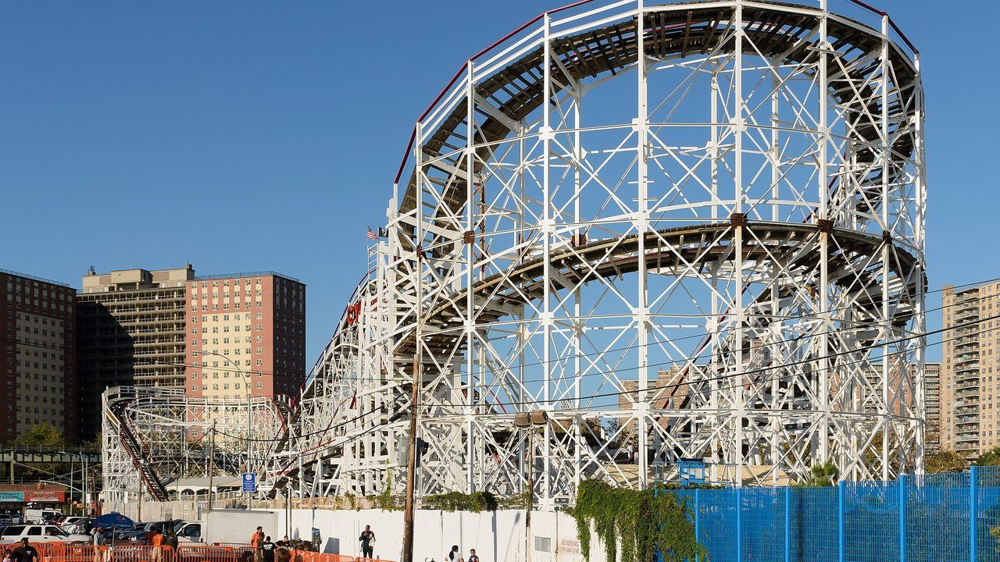

Race, Coney Island Boardwalk

Behind
Best +0:01
371W
Target 418 W-47 W
- Cadence
- 87rpm
- Heart
- 140bpm
- Speed
- 26.5km/h
Work4 of 11
1:47
Next: · 1:00 at level 13
-0.2%
2 m climbed
2.55 km
19
Resistance / 32
Solo races your best-time ghost: position reads Ahead or Behind, and solo alone gets a Pause button. Frozen at 6:13.